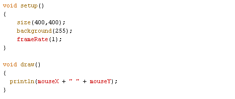
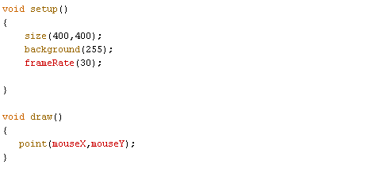
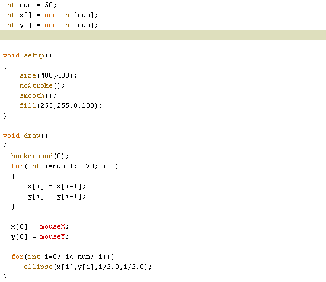
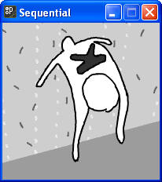
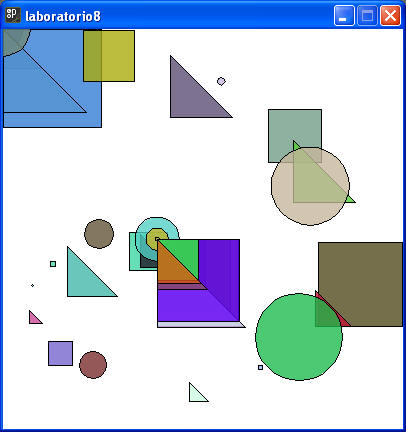
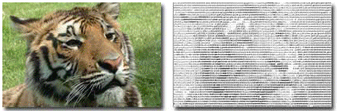

Recuerda que los colores y tamaños deben ser los más parecidos a los dibujos solicitados. Debes agregar como comentario de tu programa, las preguntas de reflexión y su respectivas respuestas a los cuestionamientos hechos a lo largo de la práctica.
1.Introduce las siguiente líneas de código y posteriormente contesta las preguntas que vienen en cada sección de la pregunta.

¿ Qué hace la aplicación?
¿ Qué significan los valores que se muestran en la consola?
¿ Qué pasa si cambias a 10 el parámetro de frameRate?
Comenta el código anterior y posteriormente agrega el siguiente código.

¿ Qué hace la aplicación?
Prueba tu programa para que en vez de que dibuje un punto, cree otros tipos de figuras geométricas básicas. Ten en cuenta el manejo de trasparencia para tal fin.
2. Introduce las siguiente líneas de código y posteriormente contesta las preguntas. Ten cuidado en introducir correctamente el código, ya que si por error el programa accede a localidades fuera del arreglo, al ejecutar la aplicación está se puede bloquear o en su defecto mandar un error a la consola.

¿ Qué hace la aplicación?
Explica cómo lo hace.
3. Crea una animación de imágenes como la descrita en la sesión de teoría. Para este caso el sprite de imágenes queda a tu criterio. Para la construcción de este ejercicio se recomienda que te bases en el ejemplo que se encuentra en Processing en el menú de file / examples / topics / animation / sequetial.
Caben mencionar que la secuencia elegida debe generar una animación con coherencia.

Sección de ejercicios opcionales
4. Crea un programa como el de la sección 1, pero con la variante de que el dibujo que vaya mostrando no sea el mismo. ni del mismo tamaño ni del mismo color. El primer dibujo debe ser un cuadrado, el segundo un triángulo y el tercero un círculo. En este caso el framaRate debe ser de 10, mientras que el tamaño de los dibujos no debe ser mayor a una cuarta parte del ancho de la ventana. A continuación se muestra una imagen del programa en ejecución. Agrega un texto donde quede registrado que tu fuiste el autor del dibujo. El tipo de fuente y tamaño queda a tu criterio.

5. Ascii Art: Crea una imagen de caracteres a partir de una imagen tuya, para poder hacerlo se recomienda que utilices una de las siguientes aplicaciones (en línea y para instalar), en caso de que conozcas una mejor, puedes utilizarla y al enviar este ejercicio debes citar la fuente.
Ejemplo:
